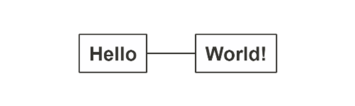

nomnoml provides an R interface to nomnoml.js, a tool for drawing sassy UML diagrams based on syntax with customizable styling.
Installation
Install from CRAN:
install.packages("nomnoml")Or from GitHub using:
install.packages("remotes")
remotes::install_github("rstudio/nomnoml")To use nomnoml in an R Markdown document, you also need to make sure the external dependency on PhantomJS is available. You may either download PhantomJS from its website, or use the function webshot::install_phantomjs() to install it automatically.
install.packages("webshot")
webshot::install_phantomjs()Getting Started
You can create your first diagram by running:
nomnoml::nomnoml("[Hello]-[World!]")
To make the diagram flow vertically, the default at nomnoml.com, add the direction directive:
#direction: down
[Hello]-[World!]
You can also use nomnoml in R Markdown:
---
title: "A Diagram"
output: html_document
---
```{r, setup, include=FALSE}
library(nomnoml)
```
```{nomnoml}
#stroke: orange
#.box: fill=#8f8 dashed visual=ellipse
[A]-[B]
[B]-[<box>C]
```
SVG
To render using SVG, add svg = TRUE
nomnoml(diagram, svg = TRUE)To render a nomnoml chunk in R Markdown, add svg=TRUE to the chunk options
```{nomnoml, svg=TRUE}
#stroke: orange
#.box: fill=#8f8 dashed visual=ellipse
[A]-[B]
[B]-[<box>C]
```
Advanced
Notice that much more complex diagrams can be designed using nomnoml by combining association types, classifier types, directives and custom classifier styles.
#stroke: #a86128
#direction: down
[<frame>Decorator pattern|
[<abstract>Component||+ operation()]
[Client] depends --> [Component]
[Decorator|- next: Component]
[Decorator] decorates -- [ConcreteComponent]
[Component] <:- [Decorator]
[Component] <:- [ConcreteComponent]
]
Classifier types
[name]
[<abstract> name]
[<instance> name]
[<reference> name]
[<note> name]
[<package> name]
[<frame> name]
[<database> name]
[<start> name]
[<end> name]
[<state> name]
[<choice> name]
[<input> name]
[<sender> name]
[<receiver> name]
[<transceiver> name]
[<actor> name]
[<usecase> name]
[<label> name]
[<hidden> name]Directives
#arrowSize: 1
#bendSize: 0.3
#direction: down | right
#gutter: 5
#edgeMargin: 0
#edges: hard | rounded
#fill: #eee8d5; #fdf6e3
#fillArrows: false
#font: Calibri
#fontSize: 12
#leading: 1.25
#lineWidth: 3
#padding: 8
#spacing: 40
#stroke: #33322E
#title: filename
#zoom: 1Directives only available when using the command line interface
Custom classifier styles
A directive that starts with “.” define a classifier style.
#.box: fill=#88ff88
#.blob: fill=pink visual=ellipse italic bold dashed
[<box> GreenBox]
[<blob> HideousBlob]Available visuals are
visual=actor
visual=class
visual=database
visual=ellipse
visual=end
visual=frame
visual=hidden
visual=input
visual=none
visual=note
visual=package
visual=receiver
visual=rhomb
visual=roundrect
visual=sender
visual=start
visual=transceiverAvailable modifiers are